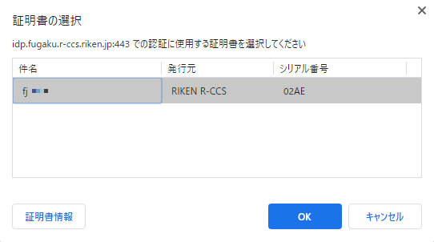
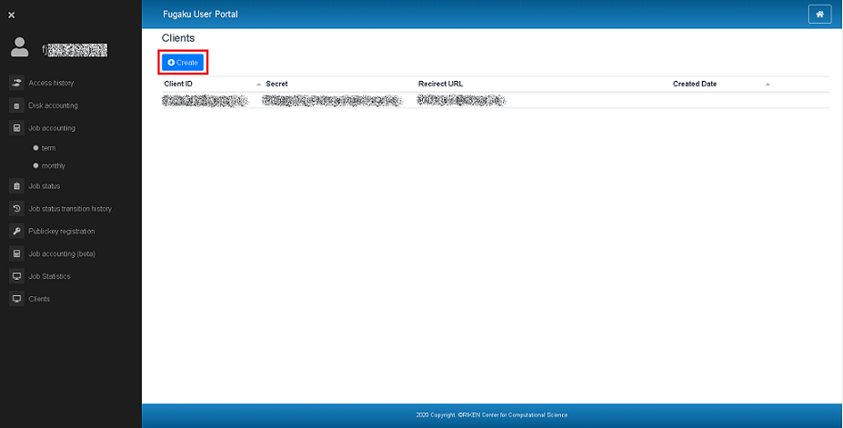
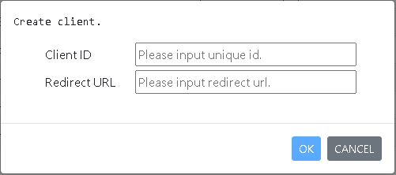
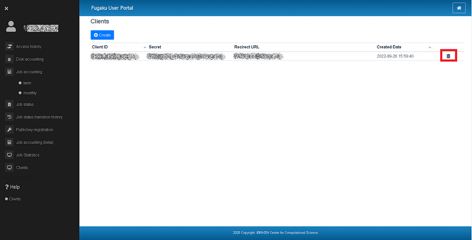

2. 認可について¶
2.1. OAuth 2.0認可コード¶
WebAPIの実行には、OAuth 2.0の認可コード付与のフローとOpenID Connectプロトコルに基づいたアクセストークンが必要です。
なお、リクエストに用いるパラメータ（client_id, client_securet, redirect_uri）の作成・削除については こちら を参照してください。
認可フローの概要は以下の通りです。
図 2.1 認可フロー概要¶
認可処理に伴うステップは、以下の通りです。
認可を要求する
ユーザを認証して、WebAPIで利用する認可コードを取得するために、認可エンドポイントURLにクエリパラメータを設定する。GET https://idp.fugaku.r-ccs.riken.jp/auth/realms/op/protocol/openid-connect/auth
クエリパラメータ
名前
種類
説明
response_type
String
(必須)認可コードを取得する場合は、"code"固定。
scope
String
(必須)ユーザーに付与を依頼する権限を指定する。 "openid"を必ず含めてください。
client_id
String
(必須)クライアントID。
redirect_uri
String
(必須)コールバックURL。認証・認可の後にリダイレクトされるURL。 クライアントに登録されているリダイレクトURLと一致している必要があります。
ユーザは、認可エンドポイントURLにアクセスする際にクライアント証明書の選択で、有効なクライアント証明書を選択する
 図 2.2 クライアント証明書の選択ダイアログ¶
同意画面で、ログインユーザを確認し、 Continue ボタンを押下する

図 2.3 同意画面¶
アクセストークンを生成する。
認可コードからをアクセストークンを生成するには、トークンエンドポイントURLにポストパラメータを設定するPOST https://idp.fugaku.r-ccs.riken.jp/auth/realms/op/protocol/openid-connect/token
ポストパラメータ
名前
種類
説明
grant_type
String
(必須)アクセストークンを取得する場合は、"authorization_code"固定。
code
String
(必須)認可コード 。
client_id
String
(必須)クライアントID。
client_secret
String
(必須)クライアントシークレット。
redirect_uri
String
(必須)コールバックURL。認証・認可の後にリダイレクトされるURL。 クライアントに登録されているリダイレクトURLと一致している必要があります。
レスポンスパラメータ（JSON)
名前
種類
説明
access_token
String
アクセストークン。
expires_in
Number
アクセストークンの有効期限が切れるまでの秒数。
id_token
String
IDトークン。JSON Webトークン（JWT）であらわされる
refresh_expires_in
Number
リフレッシュトークンの有効期限が切れるまでの秒数。
refresh_token
String
リフレッシュトークン。
token_type
String
"bearer"(固定)。
not-before-policy
Number
not-beforeポリシー。
session_state
String
session state。
scope
String
ユーザーが付与する権限。
- レスポンス例:
{ "access_token":"eyJhbGciOiJSUzI1NilSInR5cCIgOiAlSldUIiwia2lkIiA6ICJ0Ni1NNzUwelgyZFV3N3AzVVBaTTBCcVVIMkNMYWl6S2hwazAtVWVuR3I4In0.eyJqdGkiOiIwMjkxZmI5YS1kYTRhLTRlMWMtOWFmZC1lYjk3YWQyNzY2NzEiLCJleHAiOjE2MDAwMjY0NzQsIm5iZiI6MCwiaWF0IjoxNjAwMDI2MTc0LCJpc3MiOiJodHRwczovL2lkcC5mdWdha3Uuci1jY3MucmlrZW4uanAvYXV0aC9yZWFsbXMvb3AiLCJhdWQiOiJhY2NvdW50Iiwic3ViIjoiZTdjNjJmOGUtOGEwYS00NjJiLTg3YTktZWZiMTRiNzAyZWRiIiwidHlwIjoiQmVhcmVyIiwiYXpwIjoicG9ydGFsIiwiYXV0aF90aW1lIjoxNjAwMDI2MDUwLCJzZXNzaW9uX3N0YXRlIjoiY2U5NmFiNjMtOTQ0Ni00ZjNmLWJlNjQtNDQyOWIxMDc1N2ZkIiwiYWNyIjoiMSlSInJlYWxtX2FjY2VzcyI6eyJyb2xlcyI6WyJvZmZsaW5lX2FjY2VzcylSInVtYV9hdXRob3JpemF0aW9uIl19LCJyZXNvdXJjZV9hY2Nlc3MiOnsiYWNjb3VudCI6eyJyb2xlcyI6WyJtYW5hZ2UtYWNjb3VudClSIm1hbmFnZS1hY2NvdW50LWxpbmtzIiwidmlldy1wcm9maWxlIl19fSwic2NvcGUiOiJlbWFpbCBwcm9maWxlIG9mZmxpbmVfYWNjZXNzIiwiZW1haWxfdmVyaWZpZWQiOmZhbHNlLCJuYW1lIjoiZmowMDM2IiwicHJlZmVycmVkX3VzZXJuYW1lIjoiZmowMDM2IiwiZ2l2ZW5fbmFtZSI6ImZqMDAzNiJ9.PqRt2Ndkb4CRrus1sGHKgMP7j3PZte7iYFBsK_iJIZ9wZipkWpG2DNYvUsS-uKYxLZxB_8WXyVznvI-AeI3t178RYAvSIPk6Pn0pKfibetkvtumlO04rb6zvfd9elpoYvQbSzONjgx-78C6oAoBak6LGmBnxR9XIcszYsyl8JJaGRv-USPEWVdJGz1JKvzb5p4mRgswhpCMhUlJlSsQXwPTU_6zszgMN4jRqf3Peq2M465llEJgTLYCjnSSDG2sV-ORoHuUhuvkaTjTroD6_rr5dubFreeUyq6rIQQR0sepk4rx--OLW7X5geYS3NNOXwG8_yCX2qx9IMgvqsHYcOA", "expires_in":300, "refresh_expires_in":0, "refresh_token":"eyJhbGciOiJIUzI1NiIsInR5cCIgOiAiSldUIiwia2lkIiA6ICJkZWU4YjZllm0yMTM0LTRjZmYtYmMyNi01YjY5MzVkZDFjNGQifQ.eyJqdGkiOiJhMDYxMTdiNy0zYzlmLTQyNGUtYWM5ZC1lYjhiYzEyYlm5YTAiLCJleHAiOjAsIm5iZiI6MCwiaWF0IjoxNjAwMDI2MTc0LCJpc3lmOiJodHRwczovL2lkcC5mdWdha3Uuci1jY3MucmlrZW4uanAvYXV0aC9yZWFsbXMvb3AiLCJhdWQiOiJodHRwczovL2lkcC5mdWdha3Uuci1jY3MucmlrZW4uanAvYXV0aC9yZWFsbXMvb3AiLCJzdWIiOiJlN2M2MmY4ZS04YTBhLTQ2MlmtODdhOS1lZlmxNGI3MDJlZGIiLCJ0eXAiOiJPZmZsaW5lIiwiYXpwIjoicG9ydGFsIiwiYXV0aF90aW1lIjowLCJzZXNzaW9uX3N0YXRlIjoiY2U5NmFiNjMtOTQ0Ni00ZjNmLWJlNjQtNDQyOWIxMDc1N2ZkIiwicmVhbG1fYWNjZXNzIjp7InJvbGVzIjpbIm9mZmxpbmVfYWNjZXNzIiwidW1hX2F1dGhvcml6YXRpb24iXX0sInJlc291cmNlX2FjY2VzcyI6eyJhY2NvdW50Ijp7InJvbGVzIjpbIm1hbmFnZS1hY2NvdW50IiwibWFuYWdlLWFjY291bnQtbGlua3lmLCJ2aWV3LXByb2ZpbGUiXX19LCJzY29wZSI6ImVtYWlsIHByb2ZpbGUgb2ZmbGluZV9hY2Nlc3lmfQ.tigxazAMNx_FkD0MOsutK87tEagO6EMwmQDSHRJ7g2U", "token_type":"bearer", "not-before-policy":0, "session_state":"ce96ab63-9446-4f3f-be64-4429b10757fd", "scope":"email profile offline_access" }
認証済みにも関わらず、WebAPIの実行結果が、403（認証エラー）となる場合は、リフレッシュトークンを利用した再認証を実施してください。なお、リフレッシュトークンでの再認証にも失敗する場合は、認証手順の最初から実施してください。
リフレッシュトークンからアクセストークンを生成する。
リフレッシュトークンからをアクセストークンを生成するには、トークンエンドポイントURLにポストパラメータを設定するPOST https://idp.fugaku.r-ccs.riken.jp/auth/realms/op/protocol/openid-connect/token
ポストパラメータ
名前
種類
説明
grant_type
String
(必須)"refresh_token"固定。
refresh_token
String
(必須)リフレッシュトークン
client_id
String
(必須)クライアントID。
client_secret
String
(必須)クライアントシークレット。
redirect_uri
String
(必須)コールバックURL。認証・認可の後にリダイレクトされるURL。 クライアントに登録されているリダイレクトURLと一致している必要があります。
レスポンスパラメータ（JSON)
アクセストークンの生成と同様。
2.2. X.509 クライアント証明書¶
X.509 証明書を利用することで、アクセストークンを用いずに、WebAPIを利用することができます。
X.509証明書の形式
cURLを利用する場合、X.509証明書の形式はPEM形式に変換する必要があります。PKCS#12形式のクライアント証明書をPEM形式に変換する手順を以下に示します。$ openssl pkcs12 -in local_account_name.p12 -nodes -out local_account_name.pem Enter Import Password: # pathphraseX.509証明書の利用
cURLを利用する場合、--certオプションにPEM形式に変換した証明書を指定してください。全マシン状態の取得APIの実行例を以下に示します。$ curl --cert local_account_name.pem https://api.fugaku.r-ccs.riken.jp/status/ [{"status":"OK","machine":"computer"}]
2.3. Clients リクエストに用いるパラメータの作成¶
リクエストに用いるパラメータを作成できます。
Clientsについて
登録したClient情報(Client ID, Redirect URL, Secret, Created Date)を閲覧できます。
Client ID
APIアクセスに必要なOAuth2.0認証情報です。
OIDC要求のクライアント識別子として使用されます。
英数字とアンダーバーやハイフンを組み合わせた文字列を入力します。
例：
u99999_dummy_1
Redirect URL
認証が成功した後にブラウザがリダイレクトできるURLです。
「http://example.com/」などの単純なワイルドカードを使用できます。 /my/relative/path/ などの相対パスも指定できます。
URL入力例：
http://localhost/*
Secret
ClientIDと同様に、APIアクセスに必要なOAuth2.0認証情報です。
Client作成時に自動的に生成されます。
Created Date
Clientを作成した日時です。
 ボタン
ボタンclientを新しく発行するのに必要な情報を入力します。
ボタン
登録済みのclientを削除します。
一覧ソート
Client IDとCreated Dateの2っはソートが可能です。 一覧のタイトル表示をクリックするソートがされます。
Clientの新規作成
clientを新規作成します。 - ボタンをクリックすると、入力するウィンドウ（Create client.）が表示されます。
 Client IDと、Redirect URLを入力します。
入力したら ボタンを押下します。 ボタン押下後はSecretの発行を自動で行います。 発行・登録しない場合は
 ボタンを押下してください。
ボタンを押下してください。ボタンを押下するとClients一覧の表示が更新されて、今回追加したものが表示されます。
Clientの削除
登録済みのclientを削除します。 一覧の右側に ボタンが表示されています。Clientを削除するにはこの ボタンをクリックしてください。
削除するClientIDを表示したウィンドウ(Delete client)が表示されます。
ボタンを押下するとを削除を行います。
ボタンを押下した場合は削除せずClientは残ります。